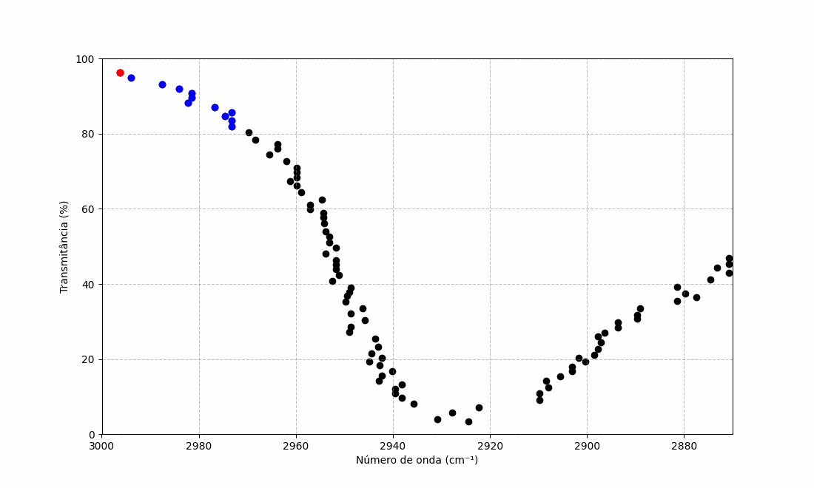

Usage Guide
Overview
Spectral Nexus is an interactive web application that helps you identify chemical compounds by comparing FT-IR spectra using a custom algorithm and a free spectral database.
The workflow is simple:
- Upload a spectrum (
.csvformat). - Analyze the spectrum using the matching algorithm.
- Review the top 5 closest candidates via charts.
- Download a detailed report in
PDFformat.
Interface Tour
The web app consists of the following main sections:
- Home: Upload your FT-IR spectrum file (
.csv) and configure processing options before analysis. - Reports (Relatórios): View and download results in a comprehensive
PDFformat.
Uploading Data
- Go to the Home page.
- Choose your
.csvfile containing the FT-IR data. - Click on Choose file (Escolher arquivo) to submit it.
💡 The
.csvmust have two columns: Wavenumber (x) and Absorbance (y).
Advanced Configurations
For greater control over the analysis, Spectral Nexus offers several advanced configuration options designed to optimize performance and improve the quality of spectral processing.
Parallel Processing
- You can enable multi-core processing to accelerate computations by leveraging multiple CPU cores — ideal for large datasets or batch processing.
Custom Analysis Range
You can specify a custom wavenumber range to be used during the band filtering stage. This allows the algorithm to focus on the most chemically informative regions of the FT-IR spectrum and discard irrelevant noise.
The tool performs a local minima search using a sliding window centered around each point in the spectrum. The window size determines how far before and after each point the algorithm looks to identify significant peaks.
- The default window is ±25 cm⁻¹, as it provided the best performance during testing.
- You can adjust this range in the interface.
A band is considered relevant if it has the highest relative transmittance within the specified range on both sides, marking it as a prominent band suitable for compound identification.
 Figure: Animated example of the filtering process used to identify relevant spectral bands.
Baseline Correction (airPLS Algorithm)
Spectral Nexus uses the adaptive iteratively reweighted penalized least squares (airPLS) algorithm for baseline correction. You can adjust the following parameters:
lambda_: Controls the smoothing intensity of the baseline. Higher values result in a smoother correction.porder: Defines the order of the penalty, allowing finer tuning for gradual curvature changes or smoother transitions.itermax: Sets the maximum number of iterations allowed during the baseline adjustment process.
💡 Fine-tuning these parameters can significantly improve the reliability of compound matching in noisy or complex spectra.
Downloading Report
Once the analysis is complete, you can generate a detailed PDF report with your results.
Steps
- Navigate to the Reports tab.
- Click Download Report (Download Relatório) to export the results.
Report Contents
The generated PDF includes:
-
Candidate Table
A ranked list of the top matched compounds with similarity scores. -
Overlaid Spectra Plots
Visual comparison between your input spectrum and each of the top matches. -
Metadata
Information such as timestamp, preprocessing parameters used, and configuration details.
💡 Make sure you've run an analysis before attempting to download the report. The Reports tab is enabled only after a successful analysis.
Tips & Troubleshooting
- Ensure your uploaded
.csvis correctly formatted. - The "Reports" tab is only enabled after a successful analysis.
- If no matches are found, the compound may not exist in the reference database, or the resolution of the uploaded FT-IR spectrum may differ significantly from the database spectra.
Questions or Feedback?
If you encounter issues or have suggestions, feel free to open an issue or reach out via GitHub Discussions.